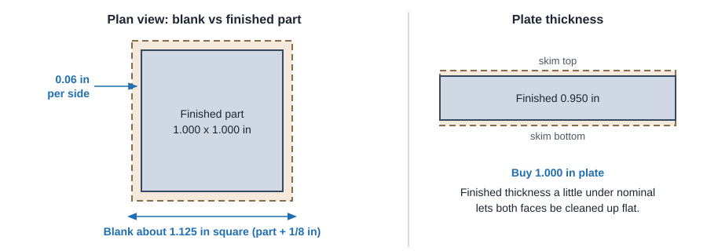
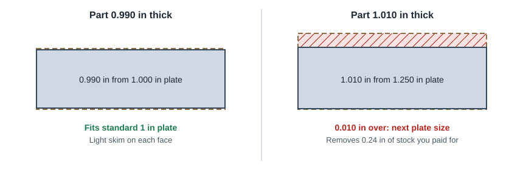

CNC Machining
Stock Sizes & Design Extents
Machined parts start as a standard plate, bar or rod. Choose your overall extents so the part fits inside a common stock size with a little clean-up allowance. Landing a few thousandths over a stock size forces the next size up and pays for material you then cut away.
Blank allowance

- Rule of thumb: a 1.000 x 1.000 x 1.000 in finished part comes from about a 1.125 in blank. In metric, keep the part at least 3 mm smaller than the blank in each direction.
- Sawn faces need about 0.06 to 0.125 in (1.5 to 3 mm) per side to clean up.
- Plate thickness: plate is sold at nominal thickness with a mill tolerance. If both faces must be machined flat, make the finished thickness a little under nominal (for example 0.950 in from 1.000 in plate, or 23 to 24 mm from 25 mm).
- Use the as-supplied surface when tolerance and finish allow. Precision ground flat stock and cast tooling plate (for example MIC-6 style aluminum) are flat enough that some faces need no machining.
- Leave clamping stock on parts that must be held by extra material and faced off later. See First vs final op.
Watch for the size jump

Before you finalize the bounding box, compare each extent with the stock tables below. If a dimension lands just over a standard size, either shrink it under the size (keeping the clean-up allowance) or deliberately design up to use the next size.
Common inch stock: plate and flat bar
| Form | Common sizes (inches) | Notes |
|---|---|---|
| Aluminum plate / sheet thickness | 1/8, 3/16, 1/4, 5/16, 3/8, 1/2, 5/8, 3/4, 1, 1-1/4, 1-1/2, 1-3/4, 2, 2-1/2, 3, 3-1/2, 4 | 6061-T6 and 7075-T6 widely stocked; cut to size by suppliers |
| Aluminum flat bar thickness | 1/8, 3/16, 1/4, 3/8, 1/2, 5/8, 3/4, 1, 1-1/4, 1-1/2, 2 | Usually 12 ft lengths or cut pieces |
| Flat bar widths | 1/2, 3/4, 1, 1-1/4, 1-1/2, 2, 2-1/2, 3, 3-1/2, 4, 5, 6, 8 | Width is a near-finished size; often only thickness and length get machined |
| Square bar | 1/4, 3/8, 1/2, 5/8, 3/4, 1, 1-1/4, 1-1/2, 2, 2-1/2, 3, 4 | Good starting blank for small cubic parts |
| Steel and stainless plate / flat bar | 1/8, 3/16, 1/4, 3/8, 1/2, 5/8, 3/4, 1, 1-1/4, 1-1/2, 2, 3 | Thicker sizes less common in stainless; check your supplier |
| Plastic sheet (acetal, nylon, UHMW, PC, acrylic) | 1/16, 1/8, 3/16, 1/4, 3/8, 1/2, 3/4, 1, 1-1/4, 1-1/2, 2, 2-1/2, 3, 4 | Thickness tolerance is looser than metal; plan to skim both faces |
Common inch stock: round bar
| Diameter range | Typical steps | Example sizes (inches) |
|---|---|---|
| 1/8 to 1 in | 1/16 in (some 1/32 in) | 1/8, 3/16, 1/4, 5/16, 3/8, 7/16, 1/2, 9/16, 5/8, 3/4, 7/8, 1 |
| 1 to 2 in | 1/8 in | 1-1/8, 1-1/4, 1-3/8, 1-1/2, 1-5/8, 1-3/4, 2 |
| 2 to 4 in | 1/4 in | 2-1/4, 2-1/2, 2-3/4, 3, 3-1/4, 3-1/2, 4 |
| Over 4 in | 1/2 in | 4-1/2, 5, 5-1/2, 6, 7, 8 |
Availability varies by alloy. 6061, 2011, 12L14, 1018, 303 and C360 brass are the most common free-machining choices for turned parts.
Common metric stock
| Form | Common sizes (mm) |
|---|---|
| Plate / sheet thickness | 3, 4, 5, 6, 8, 10, 12, 15, 16, 20, 25, 30, 35, 40, 50, 60, 80, 100 |
| Flat bar thickness | 3, 4, 5, 6, 8, 10, 12, 15, 20, 25, 30, 40, 50 |
| Flat bar width | 10, 12, 15, 20, 25, 30, 40, 50, 60, 80, 100, 120, 150, 200 |
| Round bar diameter | 3, 4, 5, 6, 8, 10, 12, 14, 15, 16, 18, 20, 22, 25, 28, 30, 32, 35, 40, 45, 50, 55, 60, 65, 70, 75, 80, 90, 100 |
| Square bar | 6, 8, 10, 12, 15, 20, 25, 30, 40, 50, 60 |
Common European stock lists. Exact sizes and tolerances vary by supplier and alloy.
Worked examples: finished part to stock
| Finished part | Stock to buy | Comment |
|---|---|---|
| Plate 4.00 x 6.00 x 0.45 in, both faces machined | 1/2 in plate, cut 4.25 x 6.25 in | 0.05 in for facing, 1/8 in per side on X and Y |
| Plate 4.00 x 6.00 x 0.52 in | 5/8 in plate | Just over 1/2 in: consider 0.48 in to stay in 1/2 in plate |
| Block 1.90 x 1.90 x 3.00 in | 2 in square bar, cut 3.125 in long | Fits with 0.05 in per side on the square |
| Shaft 0.990 in max diameter | 1 in round bar | OD cleans up; tight but common |
| Shaft 1.010 in max diameter | 1-1/8 in round bar | Consider 0.990 in, or use 1 in as-rolled OD if the tolerance allows |
| Bracket 80 x 50 x 18 mm | 20 mm plate, cut 85 x 55 mm | 2 mm for facing, 2.5 mm per side |
| Bushing 24 mm OD | 25 mm round bar | 1 mm on diameter for clean-up |
Automated services and pre-stocked blocks
- Automated quick-turn services keep a fixed set of pre-cut blocks per material instead of ordering stock per job. Your part is matched to the smallest block it fits in.
- Block thicknesses step in fixed increments (for example around 0.75, 1.25, 1.75, 2.25, 2.75, 3.25 and 3.75 in for aluminum). Not every size exists in every material; harder metals usually have fewer and thinner blocks.
- The same "size jump" rule applies: a part slightly over one block thickness gets the next block and pays for more stock and machining.
- Check the vendor's published maximum part extents by material before finalizing a large part. See typical machine envelopes.
The closer the finished shape is to its bounding box, the less material has to be removed. A part with one long thin arm sticking out forces a large blank and lots of waste. Could the arm be a separate piece?
Xometry CNC Machining Design Guide (material blank size) · ProtoLabs "15 Design Tips to Reduce the Cost of CNC Machining" (account for blank size) · ProtoLabs CNC milling design guidelines (maximum extents by material) · common metal supplier stock lists (general).